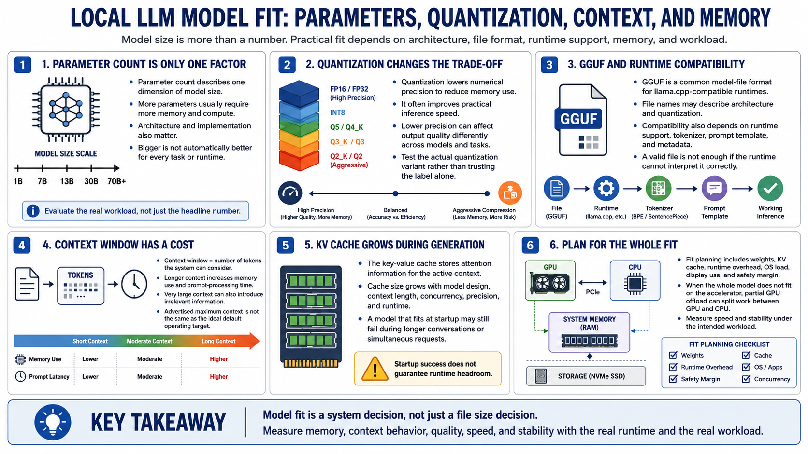

Model Size, Quantization, and Memory
Connecting to LMS... Progress: in progress

Narration
Parameter count describes one dimension of model size, but architecture and implementation also matter. More parameters usually require more memory and compute, yet a larger model is not automatically better for every task or runtime.
Quantization reduces numerical precision to lower memory use and often improve practical inference speed. Lower precision can affect output quality differently across models and tasks. Test the actual quantization rather than assuming one label guarantees a result.
G G U F is a common model-file format used by llama.cpp-compatible runtimes. A file name may describe architecture and quantization, but compatibility also depends on runtime support, tokenizer, prompt template, and model metadata.
The context window is the number of tokens the system can consider in a request and conversation. Longer context increases memory use, prompt-processing time, and the chance of irrelevant information. Advertised maximum context is not a default operating target.
During generation, the key-value cache stores attention information for context. Cache size grows with model design, context, concurrency, precision, and runtime. A model that fits at startup may run out of memory during longer or simultaneous requests.
Fit planning includes weights, cache, runtime overhead, display use, operating-system load, and safety margin. When the whole model does not fit on the accelerator, partial GPU offload can place some work on the GPU and some on the CPU. Measure speed and stability under the intended workload.